Abstract
3D piano hand motion generation is crucial for AI-based piano coaching, as it provides intuitive playing guidance through realistic visualization of hand gestures and finger movements. Recent audio-to-hand motion generation methods adopt diffusion-based architectures to synthesize piano hand motions conditioned on audio inputs. However, these diffusion-based methods rely solely on learned audio-to-motion mappings, which limits their generalization to acoustically uncommon inputs. To tackle this challenge, we propose ReSpecMo, a novel retrieval-augmented audio-to-motion framework that integrates retrieval guidance to improve robustness and motion generalization. The framework comprises two key components: (1) Frame-level Spec–Motion Retrieval module that learns frame-level spectrogram and motion embedding space via frame-level contrastive learning, producing temporally aligned representations and enabling cross-modal retrieval between spectrograms and motion sequences, and (2) Retrieval Spec–Motion Guided Generation module that leverages the pre-trained retrieval module to construct a spectrogram–motion database, retrieves the most relevant spec-motion features for a given audio input within spectrogram-to-motion retrieval, and integrates them into the motion generator to improve temporal coherence and expressive realism. Extensive experiments demonstrate that ReSpecMo consistently outperforms existing state-of-the-art methods across multiple evaluation metrics and achieves the best performance on uncommon audio inputs.
Network Architecture
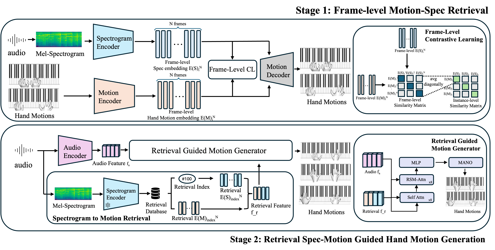
Generation Results
Retrieval Results
The blue bounding box highlights the successful retrieval of ground-truth.
spectrogram-to-motion
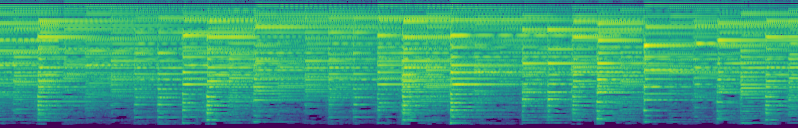
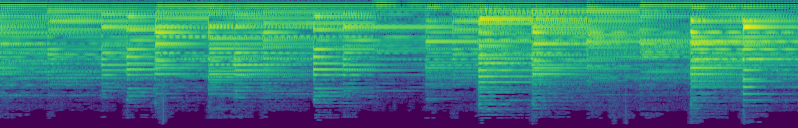
motion-to-spectrogram
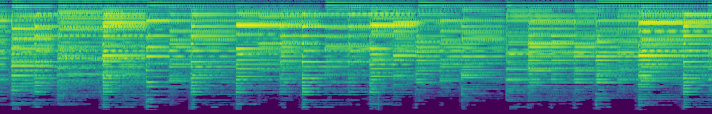
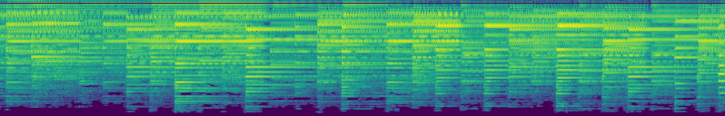
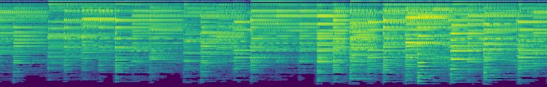
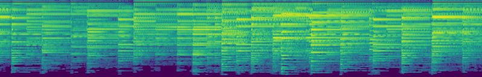
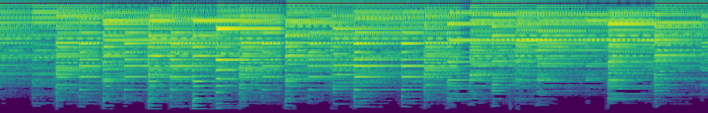

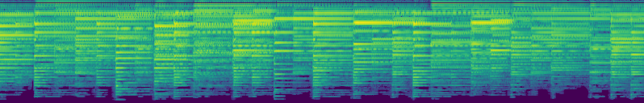
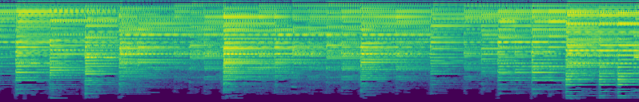
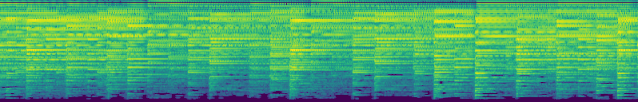
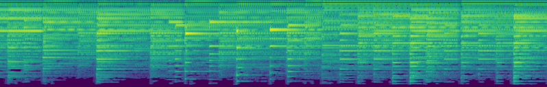
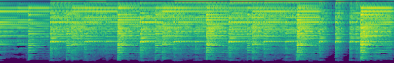
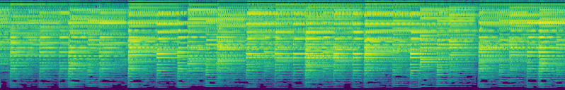
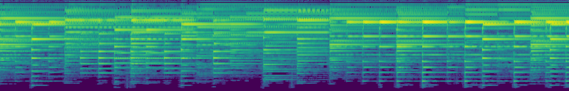
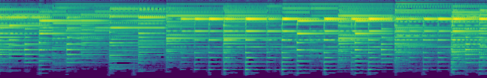
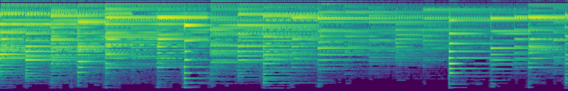
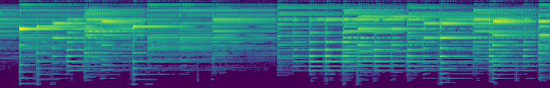
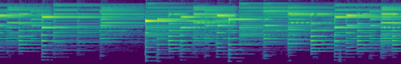
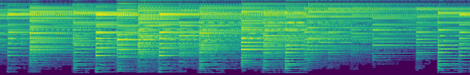
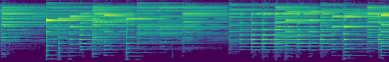
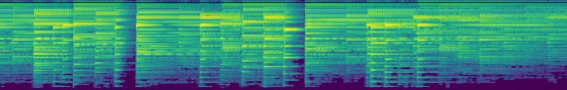
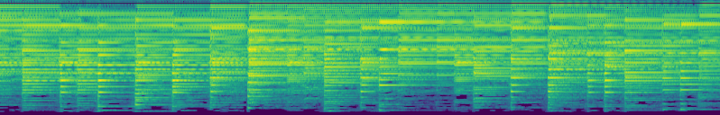
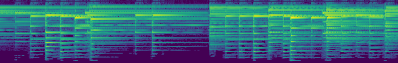
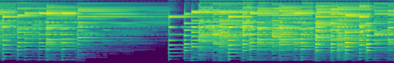
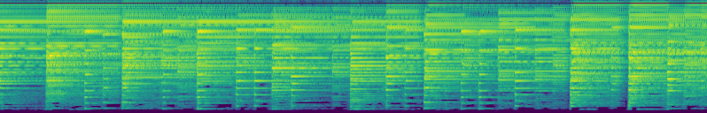
BibTeX
@article{PaperKey2026,
title={ReSpecMo: Retrieval Spec-Motion guided for Piano Hand Motion Generation},
author={Anonymous Author(s)},
journal={Under Review},
year={2026},
url={https://respecmo.github.io/ReSpecMo/}
}